{kind=link}
{kind=link}

Pearson residuals, comparing across fleets (plot 2 of 3)
file: comp_lenfit__page2_multi-fleet_comparison.png
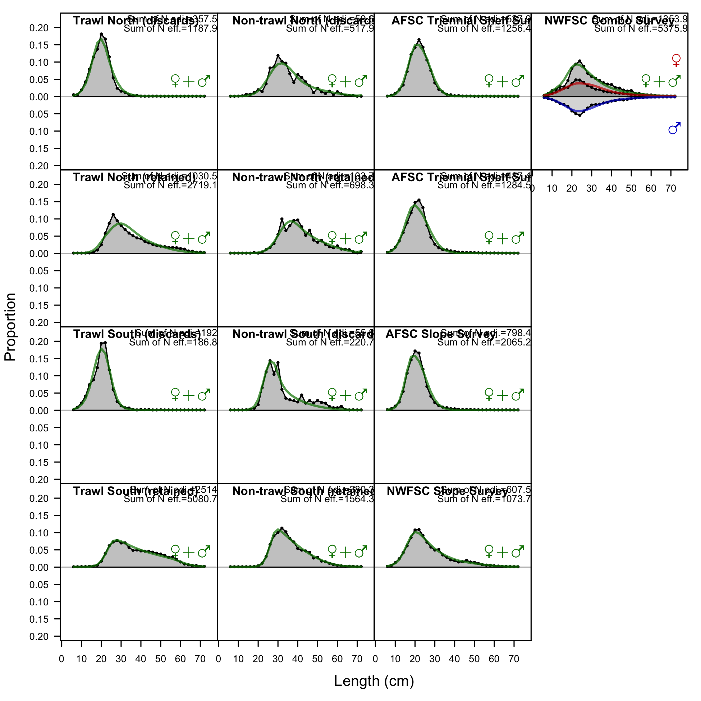
Length comps, aggregated across time by fleet.
Labels 'retained' and 'discard' indicate discarded or retained sampled for each fleet. Panels without this designation represent the whole catch.
file: comp_lenfit__aggregated_across_time.png
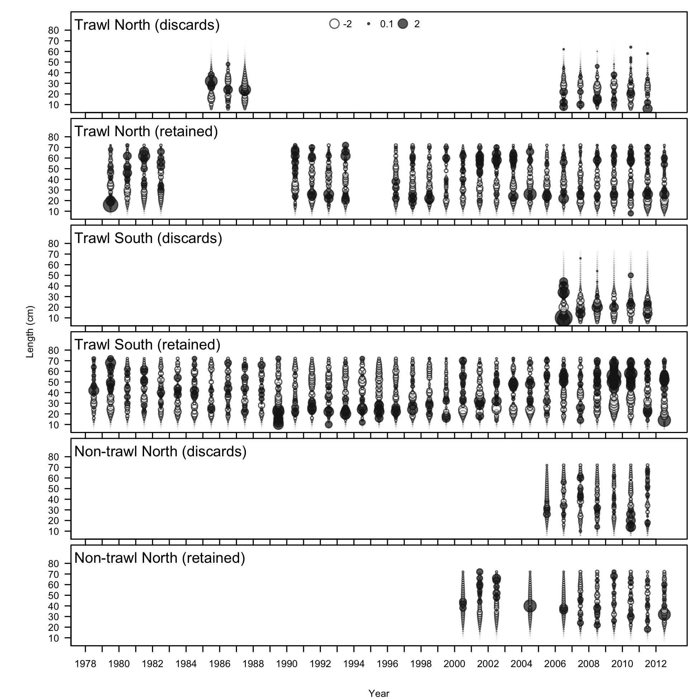
Pearson residuals, comparing across fleets (plot 1 of 3)
Closed bubbles are positive residuals (observed > expected) and open bubbles are negative residuals (observed < expected).
file: comp_lenfit__page1_multi-fleet_comparison.png
Pearson residuals, comparing across fleets (plot 2 of 3)
file: comp_lenfit__page2_multi-fleet_comparison.png

Pearson residuals, comparing across fleets (plot 3 of 3)
file: comp_lenfit__page3_multi-fleet_comparison.png

Length comps, retained, Trawl North (plot 1 of 2).
'N adj.' is the input sample size after data-weighting adjustment. N eff. is the calculated effective sample size used in the McAllister-Ianelli tuning method.
file: comp_lenfit_flt1mkt2_page1.png

Length comps, retained, Trawl North (plot 1 of 2).
'N adj.' is the input sample size after data-weighting adjustment. N eff. is the calculated effective sample size used in the McAllister-Ianelli tuning method. (plot 2 of 2)
file: comp_lenfit_flt1mkt2_page2.png

Pearson residuals, retained, Trawl North (max=4.68) (plot 2 of 2)
Closed bubbles are positive residuals (observed > expected) and open bubbles are negative residuals (observed < expected).
file: comp_lenfit_residsflt1mkt2_page2.png

N-EffN comparison, Length comps, retained, Trawl North
file: comp_lenfit_sampsize_flt1mkt2.png

Mean length for Trawl North with 95% confidence intervals based on current samples sizes.
Francis data weighting method TA1.8: thinner intervals (with capped ends) show result of further adjusting sample sizes based on suggested multiplier (with 95% interval) for len data from Trawl North:
0.655 (0.5017-1.0073)
For more info, see
Francis, R.I.C.C. (2011). Data weighting in statistical fisheries stock assessment models. Can. J. Fish. Aquat. Sci. 68: 1124-1138. https://doi.org/10.1139/f2011-025

Length comps, discard, Trawl North.
'N adj.' is the input sample size after data-weighting adjustment. N eff. is the calculated effective sample size used in the McAllister-Ianelli tuning method.
file: comp_lenfit_flt1mkt1.png
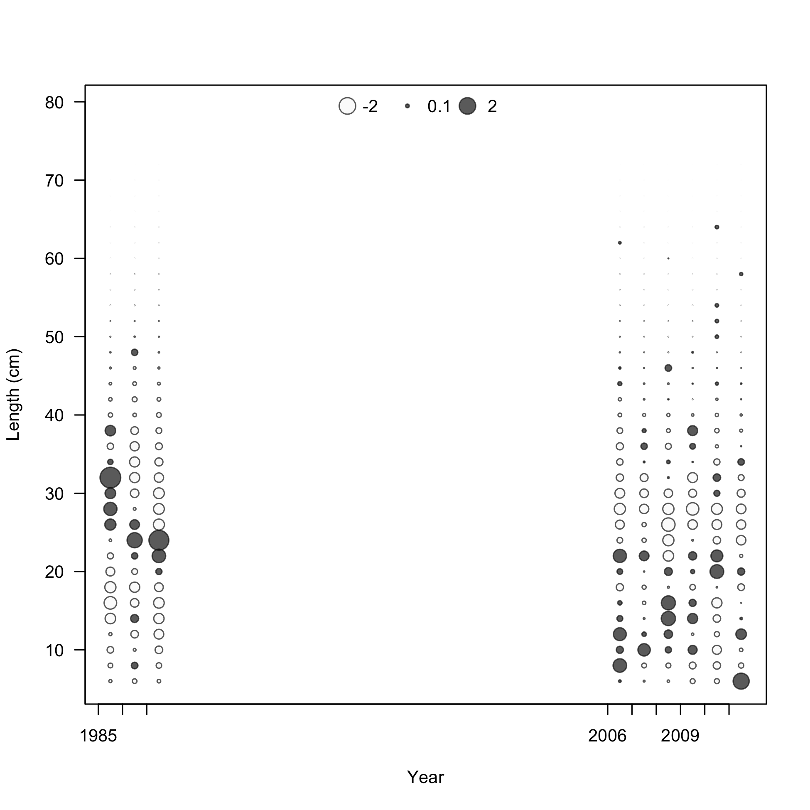
Pearson residuals, discard, Trawl North (max=3.14)
Closed bubbles are positive residuals (observed > expected) and open bubbles are negative residuals (observed < expected).
file: comp_lenfit_residsflt1mkt1.png
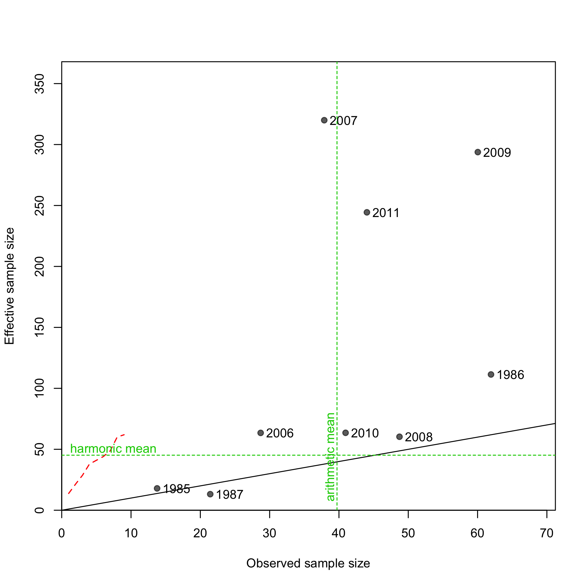
N-EffN comparison, Length comps, discard, Trawl North
file: comp_lenfit_sampsize_flt1mkt1.png
Mean length for Trawl North with 95% confidence intervals based on current samples sizes.
Francis data weighting method TA1.8: thinner intervals (with capped ends) show result of further adjusting sample sizes based on suggested multiplier (with 95% interval) for len data from Trawl North:
0.655 (0.5016-1.0246)
For more info, see
Francis, R.I.C.C. (2011). Data weighting in statistical fisheries stock assessment models. Can. J. Fish. Aquat. Sci. 68: 1124-1138. https://doi.org/10.1139/f2011-025

Length comps, retained, Trawl South (plot 1 of 2).
'N adj.' is the input sample size after data-weighting adjustment. N eff. is the calculated effective sample size used in the McAllister-Ianelli tuning method.
file: comp_lenfit_flt2mkt2_page1.png

Length comps, retained, Trawl South (plot 1 of 2).
'N adj.' is the input sample size after data-weighting adjustment. N eff. is the calculated effective sample size used in the McAllister-Ianelli tuning method. (plot 2 of 2)
file: comp_lenfit_flt2mkt2_page2.png

Pearson residuals, retained, Trawl South (max=4.38) (plot 2 of 2)
Closed bubbles are positive residuals (observed > expected) and open bubbles are negative residuals (observed < expected).
file: comp_lenfit_residsflt2mkt2_page2.png
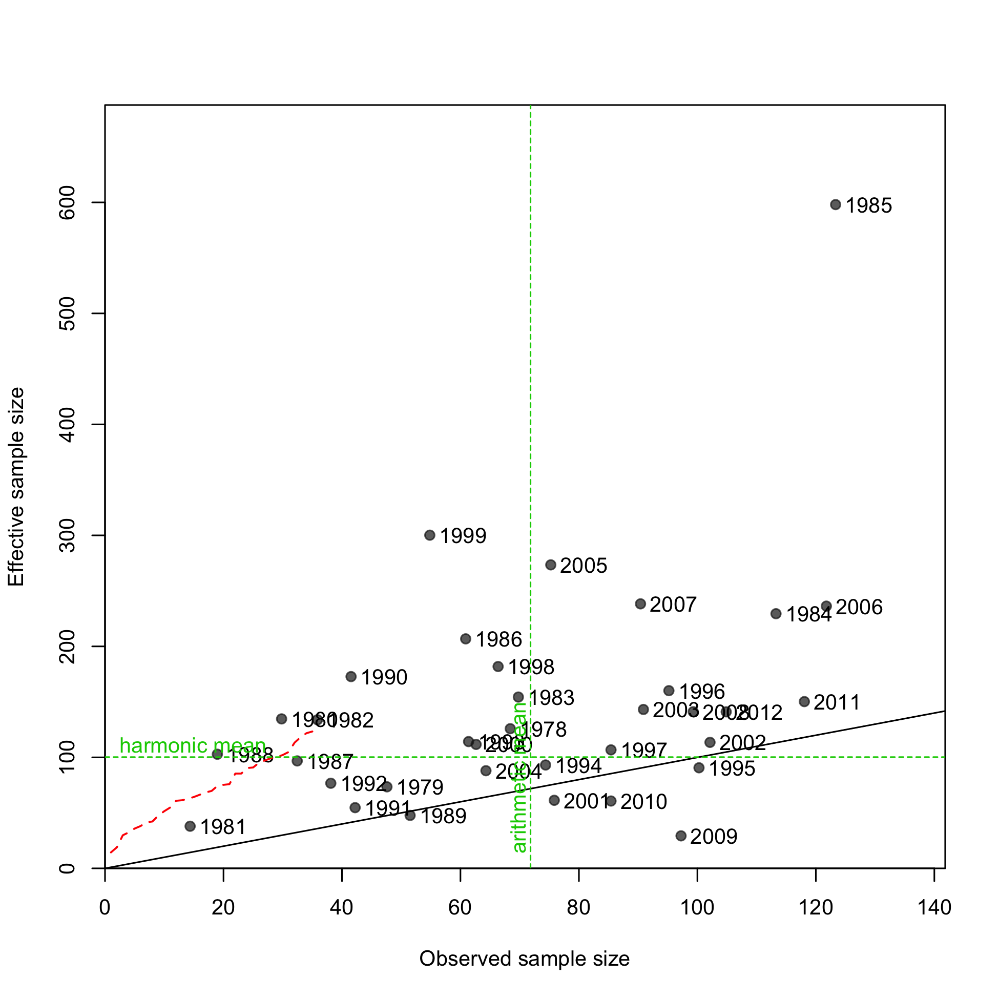
N-EffN comparison, Length comps, retained, Trawl South
file: comp_lenfit_sampsize_flt2mkt2.png

Mean length for Trawl South with 95% confidence intervals based on current samples sizes.
Francis data weighting method TA1.8: thinner intervals (with capped ends) show result of further adjusting sample sizes based on suggested multiplier (with 95% interval) for len data from Trawl South:
0.2669 (0.1943-0.4428)
For more info, see
Francis, R.I.C.C. (2011). Data weighting in statistical fisheries stock assessment models. Can. J. Fish. Aquat. Sci. 68: 1124-1138. https://doi.org/10.1139/f2011-025

Length comps, discard, Trawl South.
'N adj.' is the input sample size after data-weighting adjustment. N eff. is the calculated effective sample size used in the McAllister-Ianelli tuning method.
file: comp_lenfit_flt2mkt1.png

Pearson residuals, discard, Trawl South (max=6.43)
Closed bubbles are positive residuals (observed > expected) and open bubbles are negative residuals (observed < expected).
file: comp_lenfit_residsflt2mkt1.png
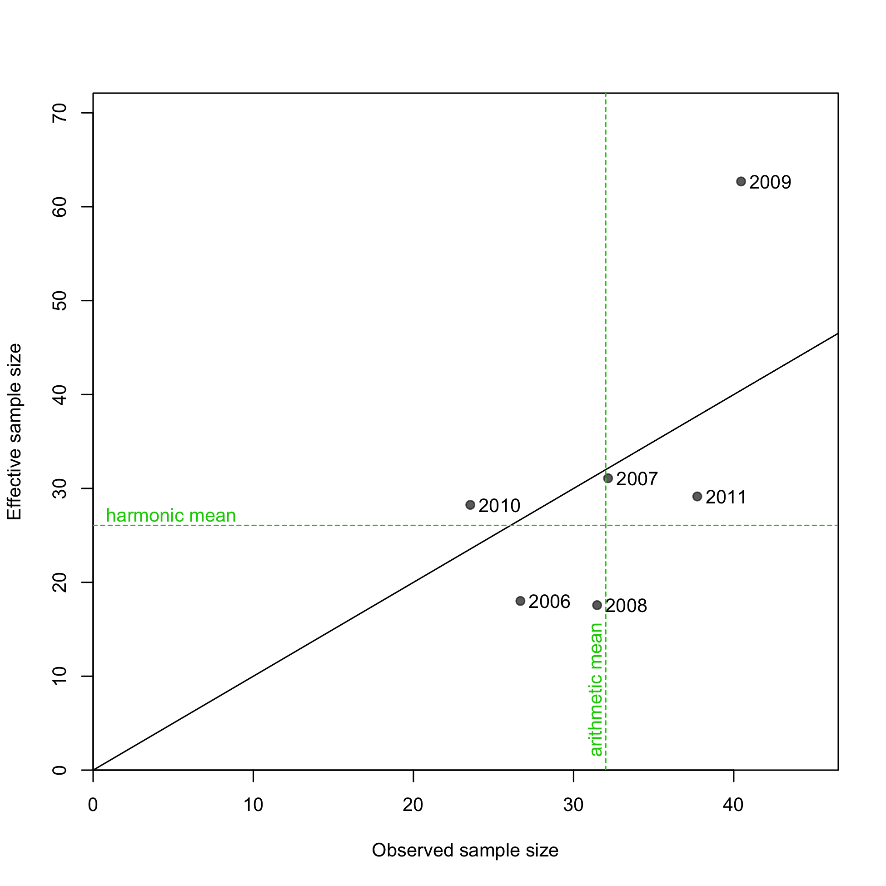
N-EffN comparison, Length comps, discard, Trawl South
file: comp_lenfit_sampsize_flt2mkt1.png
Mean length for Trawl South with 95% confidence intervals based on current samples sizes.
Francis data weighting method TA1.8: thinner intervals (with capped ends) show result of further adjusting sample sizes based on suggested multiplier (with 95% interval) for len data from Trawl South:
0.2669 (0.1908-0.4317)
For more info, see
Francis, R.I.C.C. (2011). Data weighting in statistical fisheries stock assessment models. Can. J. Fish. Aquat. Sci. 68: 1124-1138. https://doi.org/10.1139/f2011-025
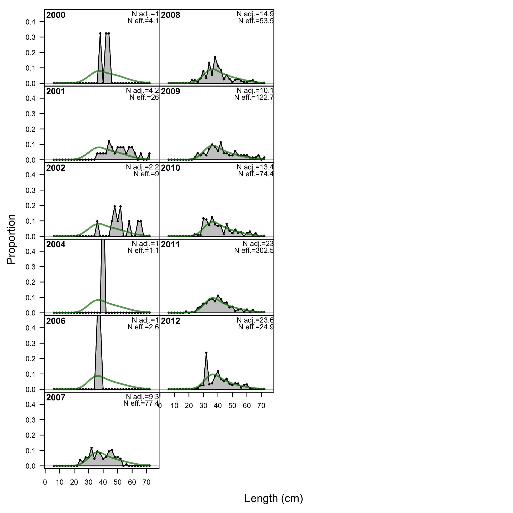
Length comps, retained, Non-trawl North.
'N adj.' is the input sample size after data-weighting adjustment. N eff. is the calculated effective sample size used in the McAllister-Ianelli tuning method.
file: comp_lenfit_flt3mkt2.png

Pearson residuals, retained, Non-trawl North (max=3.35)
Closed bubbles are positive residuals (observed > expected) and open bubbles are negative residuals (observed < expected).
file: comp_lenfit_residsflt3mkt2.png

N-EffN comparison, Length comps, retained, Non-trawl North
file: comp_lenfit_sampsize_flt3mkt2.png

Mean length for Non-trawl North with 95% confidence intervals based on current samples sizes.
Francis data weighting method TA1.8: thinner intervals (with capped ends) show result of further adjusting sample sizes based on suggested multiplier (with 95% interval) for len data from Non-trawl North:
1.4833 (0.9193-7.2867)
For more info, see
Francis, R.I.C.C. (2011). Data weighting in statistical fisheries stock assessment models. Can. J. Fish. Aquat. Sci. 68: 1124-1138. https://doi.org/10.1139/f2011-025

Length comps, discard, Non-trawl North.
'N adj.' is the input sample size after data-weighting adjustment. N eff. is the calculated effective sample size used in the McAllister-Ianelli tuning method.
file: comp_lenfit_flt3mkt1.png
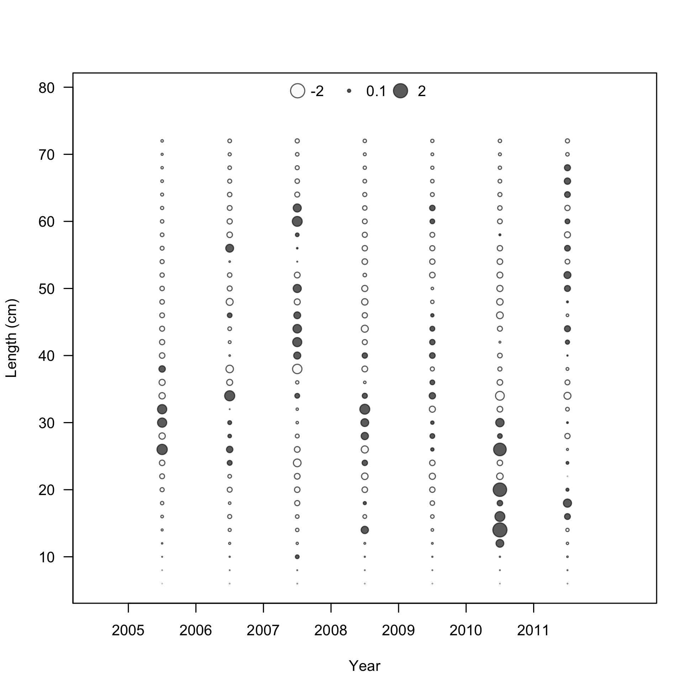
Pearson residuals, discard, Non-trawl North (max=1.98)
Closed bubbles are positive residuals (observed > expected) and open bubbles are negative residuals (observed < expected).
file: comp_lenfit_residsflt3mkt1.png

N-EffN comparison, Length comps, discard, Non-trawl North
file: comp_lenfit_sampsize_flt3mkt1.png
Mean length for Non-trawl North with 95% confidence intervals based on current samples sizes.
Francis data weighting method TA1.8: thinner intervals (with capped ends) show result of further adjusting sample sizes based on suggested multiplier (with 95% interval) for len data from Non-trawl North:
1.4833 (0.8824-7.5422)
For more info, see
Francis, R.I.C.C. (2011). Data weighting in statistical fisheries stock assessment models. Can. J. Fish. Aquat. Sci. 68: 1124-1138. https://doi.org/10.1139/f2011-025
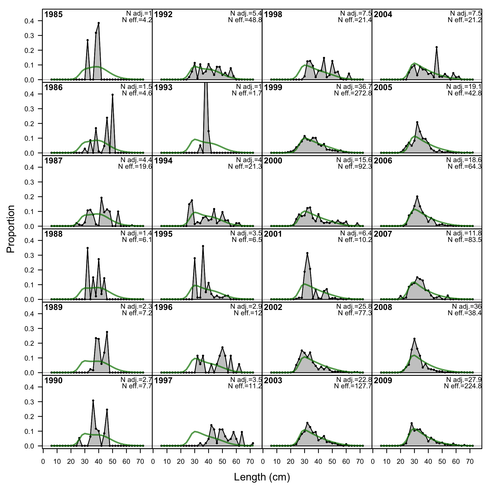
Length comps, retained, Non-trawl South (plot 1 of 2).
'N adj.' is the input sample size after data-weighting adjustment. N eff. is the calculated effective sample size used in the McAllister-Ianelli tuning method.
file: comp_lenfit_flt4mkt2_page1.png

Length comps, retained, Non-trawl South (plot 1 of 2).
'N adj.' is the input sample size after data-weighting adjustment. N eff. is the calculated effective sample size used in the McAllister-Ianelli tuning method. (plot 2 of 2)
file: comp_lenfit_flt4mkt2_page2.png

Pearson residuals, retained, Non-trawl South (max=2.87) (plot 2 of 2)
Closed bubbles are positive residuals (observed > expected) and open bubbles are negative residuals (observed < expected).
file: comp_lenfit_residsflt4mkt2_page2.png

N-EffN comparison, Length comps, retained, Non-trawl South
file: comp_lenfit_sampsize_flt4mkt2.png

Mean length for Non-trawl South with 95% confidence intervals based on current samples sizes.
Francis data weighting method TA1.8: thinner intervals (with capped ends) show result of further adjusting sample sizes based on suggested multiplier (with 95% interval) for len data from Non-trawl South:
0.8365 (0.5706-1.5721)
For more info, see
Francis, R.I.C.C. (2011). Data weighting in statistical fisheries stock assessment models. Can. J. Fish. Aquat. Sci. 68: 1124-1138. https://doi.org/10.1139/f2011-025

Length comps, discard, Non-trawl South.
'N adj.' is the input sample size after data-weighting adjustment. N eff. is the calculated effective sample size used in the McAllister-Ianelli tuning method.
file: comp_lenfit_flt4mkt1.png

Pearson residuals, discard, Non-trawl South (max=2.26)
Closed bubbles are positive residuals (observed > expected) and open bubbles are negative residuals (observed < expected).
file: comp_lenfit_residsflt4mkt1.png

N-EffN comparison, Length comps, discard, Non-trawl South
file: comp_lenfit_sampsize_flt4mkt1.png
Mean length for Non-trawl South with 95% confidence intervals based on current samples sizes.
Francis data weighting method TA1.8: thinner intervals (with capped ends) show result of further adjusting sample sizes based on suggested multiplier (with 95% interval) for len data from Non-trawl South:
0.8365 (0.5815-1.6141)
For more info, see
Francis, R.I.C.C. (2011). Data weighting in statistical fisheries stock assessment models. Can. J. Fish. Aquat. Sci. 68: 1124-1138. https://doi.org/10.1139/f2011-025

Length comps, whole catch, AFSC Triennial Shelf Survey 1.
'N adj.' is the input sample size after data-weighting adjustment. N eff. is the calculated effective sample size used in the McAllister-Ianelli tuning method.
file: comp_lenfit_flt5mkt0.png
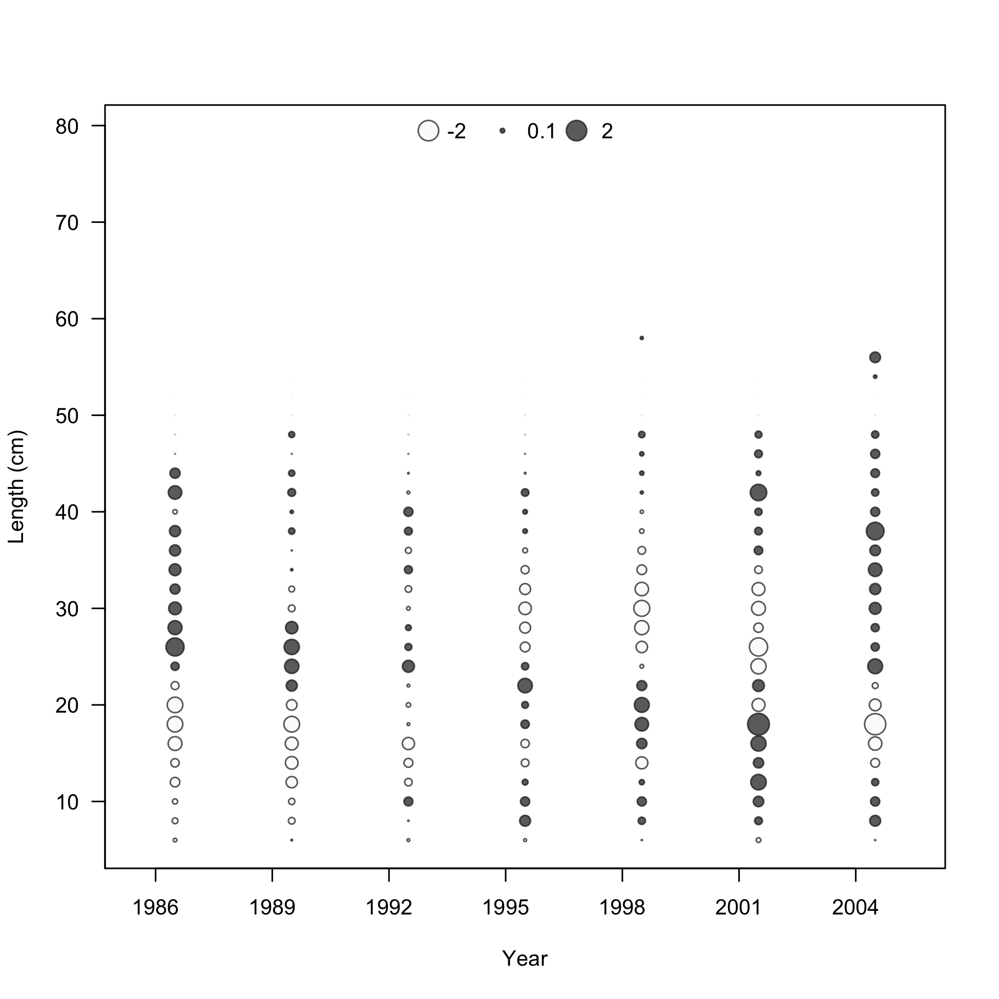
Pearson residuals, whole catch, AFSC Triennial Shelf Survey 1 (max=2.27)
Closed bubbles are positive residuals (observed > expected) and open bubbles are negative residuals (observed < expected).
file: comp_lenfit_residsflt5mkt0.png
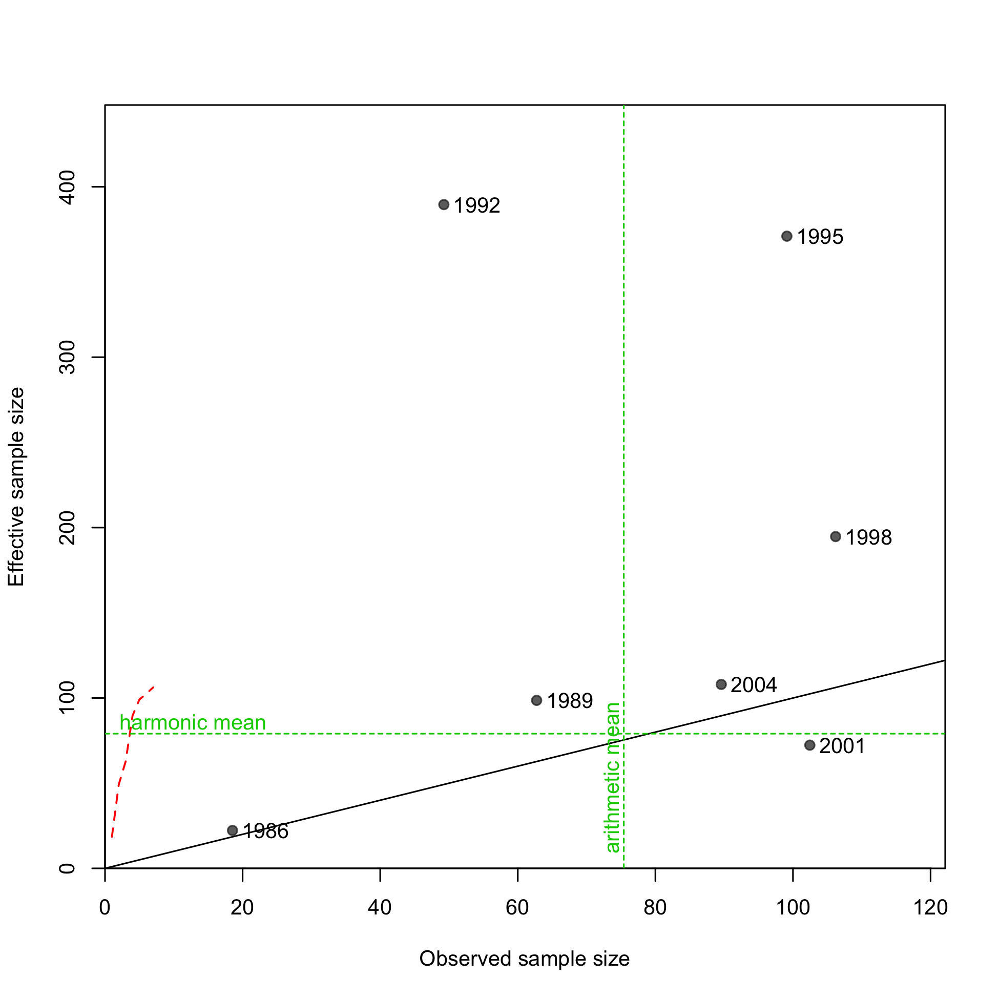
N-EffN comparison, Length comps, whole catch, AFSC Triennial Shelf Survey 1
file: comp_lenfit_sampsize_flt5mkt0.png

Mean length for AFSC Triennial Shelf Survey 1 with 95% confidence intervals based on current samples sizes.
Francis data weighting method TA1.8: thinner intervals (with capped ends) show result of further adjusting sample sizes based on suggested multiplier (with 95% interval) for len data from AFSC Triennial Shelf Survey 1:
0.4325 (0.3229-1.7152)
For more info, see
Francis, R.I.C.C. (2011). Data weighting in statistical fisheries stock assessment models. Can. J. Fish. Aquat. Sci. 68: 1124-1138. https://doi.org/10.1139/f2011-025
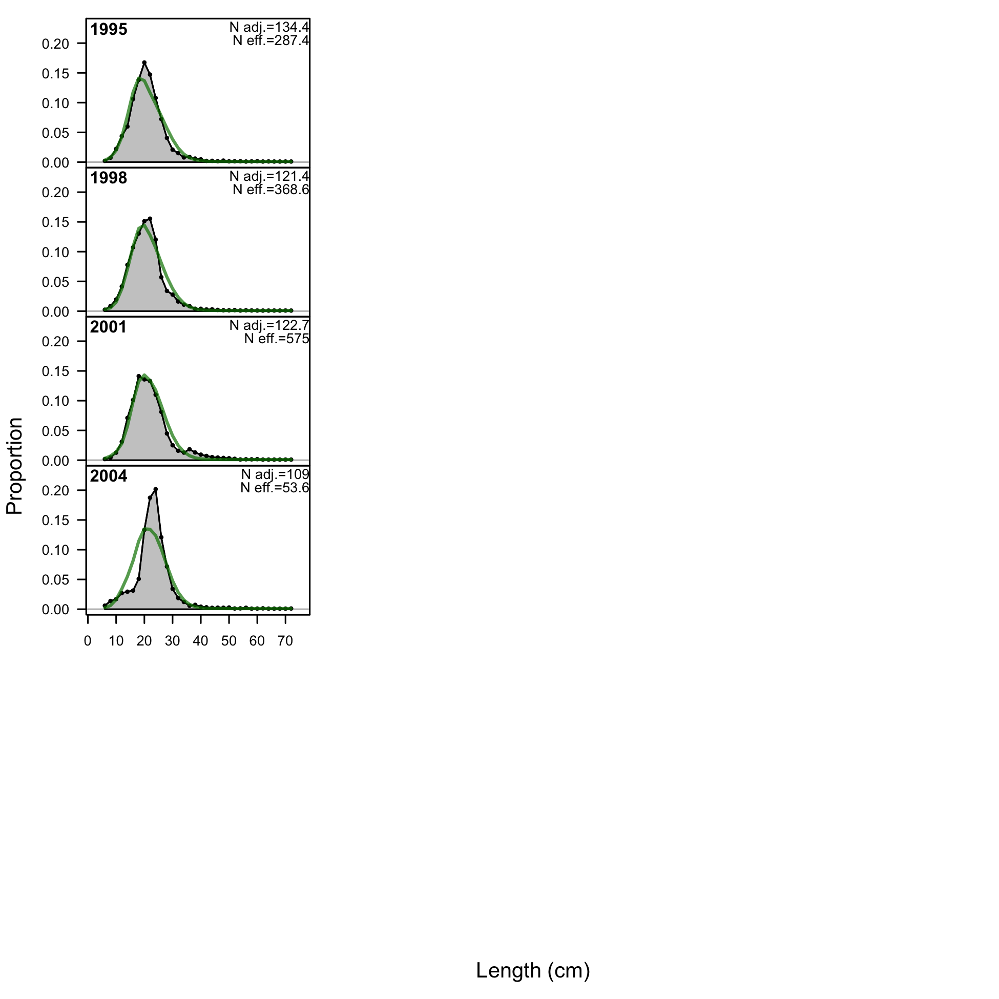
Length comps, whole catch, AFSC Triennial Shelf Survey 2.
'N adj.' is the input sample size after data-weighting adjustment. N eff. is the calculated effective sample size used in the McAllister-Ianelli tuning method.
file: comp_lenfit_flt6mkt0.png

Pearson residuals, whole catch, AFSC Triennial Shelf Survey 2 (max=2.47)
Closed bubbles are positive residuals (observed > expected) and open bubbles are negative residuals (observed < expected).
file: comp_lenfit_residsflt6mkt0.png

N-EffN comparison, Length comps, whole catch, AFSC Triennial Shelf Survey 2
file: comp_lenfit_sampsize_flt6mkt0.png

Mean length for AFSC Triennial Shelf Survey 2 with 95% confidence intervals based on current samples sizes.
Francis data weighting method TA1.8: thinner intervals (with capped ends) show result of further adjusting sample sizes based on suggested multiplier (with 95% interval) for len data from AFSC Triennial Shelf Survey 2:
1.4769 (1.0521-16.8786)
For more info, see
Francis, R.I.C.C. (2011). Data weighting in statistical fisheries stock assessment models. Can. J. Fish. Aquat. Sci. 68: 1124-1138. https://doi.org/10.1139/f2011-025

Length comps, whole catch, AFSC Slope Survey.
'N adj.' is the input sample size after data-weighting adjustment. N eff. is the calculated effective sample size used in the McAllister-Ianelli tuning method.
file: comp_lenfit_flt7mkt0.png
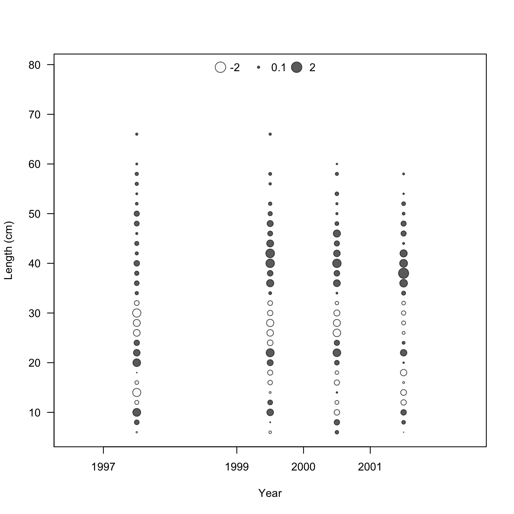
Pearson residuals, whole catch, AFSC Slope Survey (max=1.87)
Closed bubbles are positive residuals (observed > expected) and open bubbles are negative residuals (observed < expected).
file: comp_lenfit_residsflt7mkt0.png
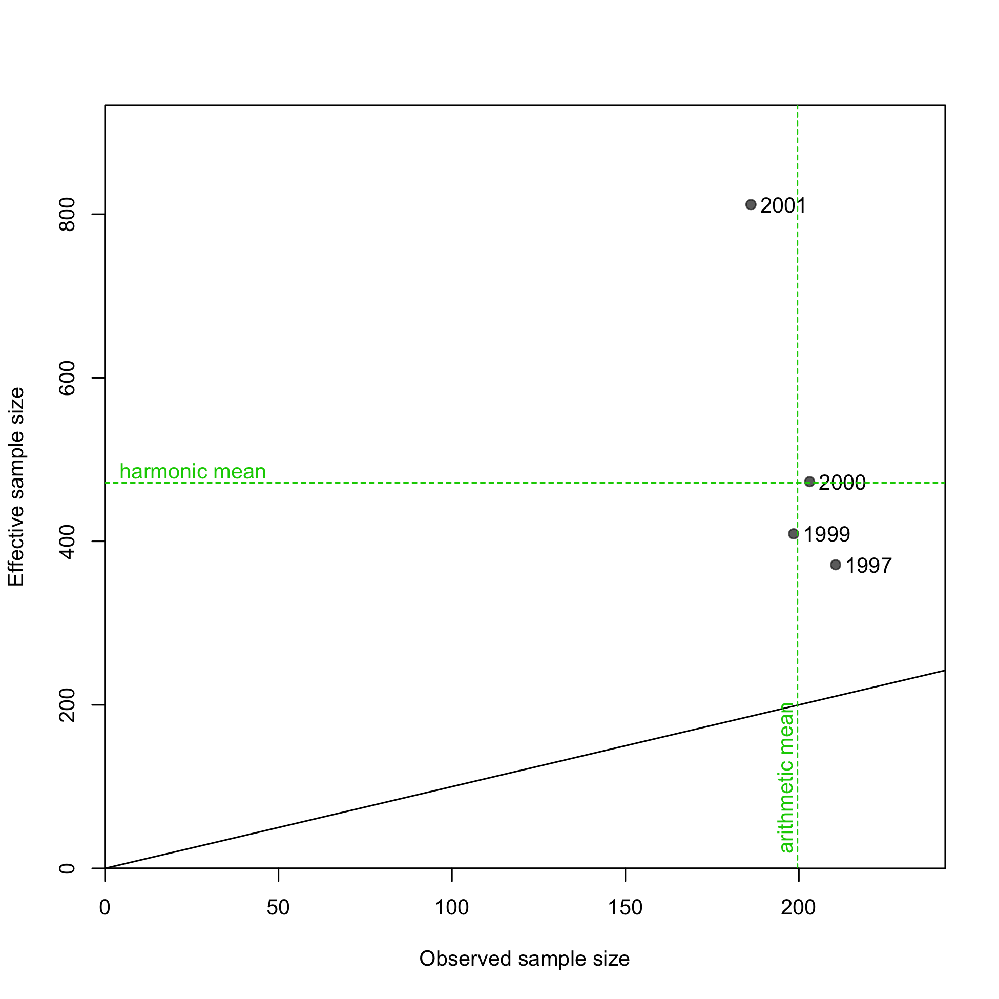
N-EffN comparison, Length comps, whole catch, AFSC Slope Survey
file: comp_lenfit_sampsize_flt7mkt0.png

Mean length for AFSC Slope Survey with 95% confidence intervals based on current samples sizes.
Francis data weighting method TA1.8: thinner intervals (with capped ends) show result of further adjusting sample sizes based on suggested multiplier (with 95% interval) for len data from AFSC Slope Survey:
6.7393 (4.5336-166.5153)
For more info, see
Francis, R.I.C.C. (2011). Data weighting in statistical fisheries stock assessment models. Can. J. Fish. Aquat. Sci. 68: 1124-1138. https://doi.org/10.1139/f2011-025

Length comps, whole catch, NWFSC Slope Survey.
'N adj.' is the input sample size after data-weighting adjustment. N eff. is the calculated effective sample size used in the McAllister-Ianelli tuning method.
file: comp_lenfit_flt8mkt0.png
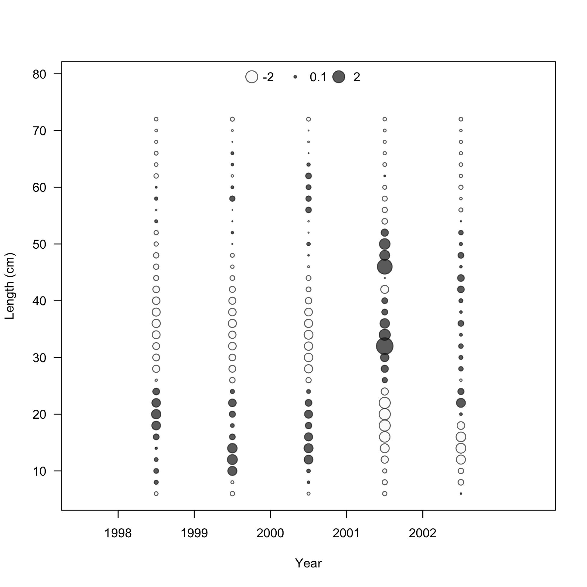
Pearson residuals, whole catch, NWFSC Slope Survey (max=3.87)
Closed bubbles are positive residuals (observed > expected) and open bubbles are negative residuals (observed < expected).
file: comp_lenfit_residsflt8mkt0.png
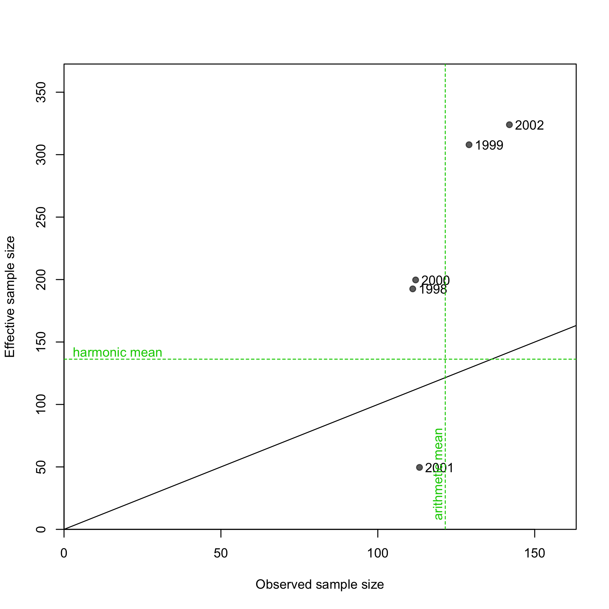
N-EffN comparison, Length comps, whole catch, NWFSC Slope Survey
file: comp_lenfit_sampsize_flt8mkt0.png

Mean length for NWFSC Slope Survey with 95% confidence intervals based on current samples sizes.
Francis data weighting method TA1.8: thinner intervals (with capped ends) show result of further adjusting sample sizes based on suggested multiplier (with 95% interval) for len data from NWFSC Slope Survey:
0.1588 (0.1056-25.9581)
For more info, see
Francis, R.I.C.C. (2011). Data weighting in statistical fisheries stock assessment models. Can. J. Fish. Aquat. Sci. 68: 1124-1138. https://doi.org/10.1139/f2011-025
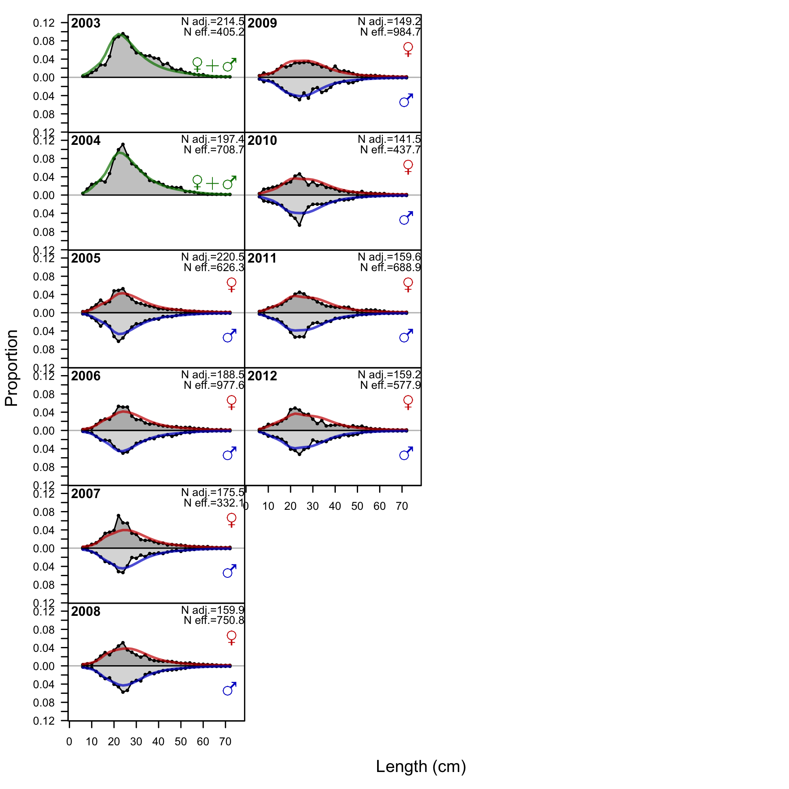
Length comps, whole catch, NWFSC Combo Survey.
'N adj.' is the input sample size after data-weighting adjustment. N eff. is the calculated effective sample size used in the McAllister-Ianelli tuning method.
file: comp_lenfit_flt9mkt0.png

Pearson residuals, whole catch, NWFSC Combo Survey (max=2.39)
Closed bubbles are positive residuals (observed > expected) and open bubbles are negative residuals (observed < expected).
file: comp_lenfit_residsflt9mkt0.png

N-EffN comparison, Length comps, whole catch, NWFSC Combo Survey
file: comp_lenfit_sampsize_flt9mkt0.png

Mean length for NWFSC Combo Survey with 95% confidence intervals based on current samples sizes.
Francis data weighting method TA1.8: thinner intervals (with capped ends) show result of further adjusting sample sizes based on suggested multiplier (with 95% interval) for len data from NWFSC Combo Survey:
0.6126 (0.3202-3.0963)
For more info, see
Francis, R.I.C.C. (2011). Data weighting in statistical fisheries stock assessment models. Can. J. Fish. Aquat. Sci. 68: 1124-1138. https://doi.org/10.1139/f2011-025

Ghost length comps, retained, Trawl North.
'N adj.' is the input sample size after data-weighting adjustment. N eff. is the calculated effective sample size used in the McAllister-Ianelli tuning method.
file: comp_gstlenfit_flt1mkt2.png

Pearson residuals, retained, Trawl North (max=NA)
Closed bubbles are positive residuals (observed > expected) and open bubbles are negative residuals (observed < expected).
file: comp_gstlenfit_residsflt1mkt2.png
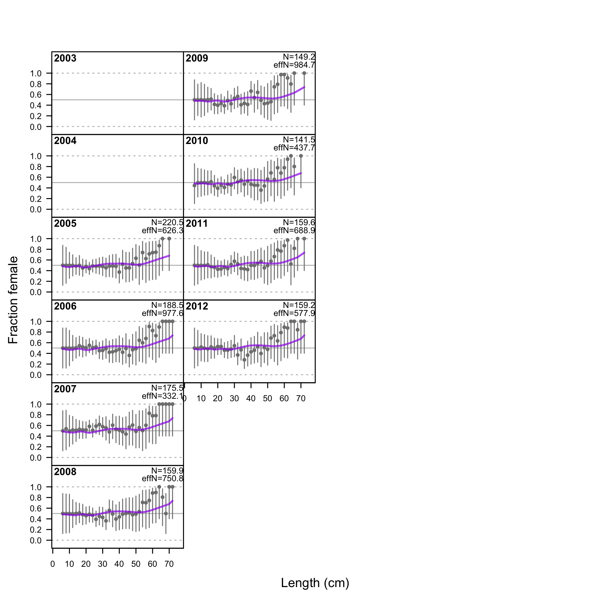
Sex ratios for length comps, whole catch, NWFSC Combo Survey.
Observed sex ratios (points) with 75% intervals (vertical lines) calculated as a Jeffreys interval based on the adjusted input sample size. The model expectation is shown in the purple line.
file: sexratio_len_flt9mkt0.png
{kind=link}
{kind=link}
{kind=link}
{kind=link}
{kind=link}
{kind=link}
{kind=link}
{kind=link}
{kind=link}
{kind=link}
{kind=link}
{kind=link}
{kind=link}
{kind=link}
{kind=link}
{kind=link}